|
|
| green seaweeds text index | photo index |
| Seaweeds > Division Chlorophyta |
| Smooth
sponge green seaweed Cladophoropsis vaucheriaeformis* Family Boodleaceae updated Oct 2016 Where seen? This woolly branching seaweed is often seen on many of our Southern shores, growing on coral rubble. Features: The entire organism can be about 20-30cm across (to 50cm), with 'stems' about 0.5-1cm wide. 'Stems' may be short knobs, long cylindrical or flattened, or even flattened leafy shapes. Tips usually thin and tapering, usually not Y-shaped. Each 'stem' is made up of fine, branched filaments that are packed together to form structures that feel woolly, velvety, spongey or felt-like. The 'stems' are smooth and do not have obvious holes in them, especially when the sponge is out of water. Light to dark green. This organism is actually a symbiotic combination of an algae (Cladophoropsis vaucheriaeformis) and a sponge (Halichondria cartilaginea, Family Halichondriidae)! The sponge cells and spicules are intertwined with the algae. Sometimes confused with the Holey sponge seaweed (Ceratodictyon sp.) which has more obvious 'holes' along the 'stems'. It is a red seaweed which also has a symbiotic relationship with another kind of sponge. The two organisms are sometimes difficult to tell apart in the field. |
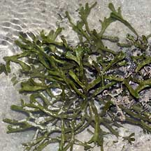 Pulau Hantu, May 05 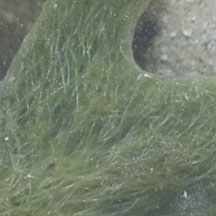 No obvious holes. Terumbu Semakau, Dec 11 |
|
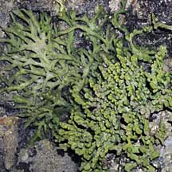 Terumbu Salu, Jan 10 |
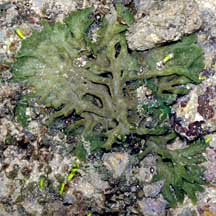 Pulau Tekukor, Jan 10 |
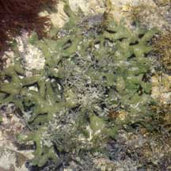 Pulau Jong, Jul 06 |
*Species are difficult to positively identify without close examination of internal parts.
On this website, they are grouped by external features for convenience of display.
| Smooth sponge green seaweeds on Singapore shores |
| Photos of Smooth sponge green seaweeds for free download from wildsingapore flickr |
| Distribution in Singapore on this wildsingapore flickr map |
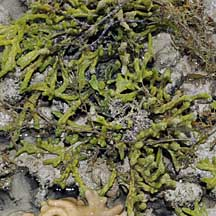 Terumbu Berkas, Jan 10 |
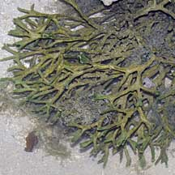 Pulau Sudong, Dec 09 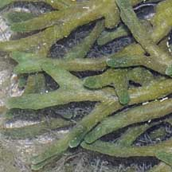 |
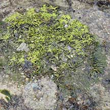 Pulau Biola, Dec 09 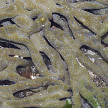 |
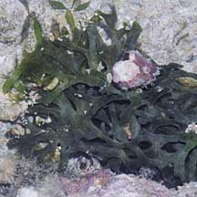 Pulau Biola, Dec 09 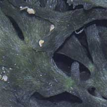 |
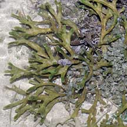 Pulau Salu, Aug 10 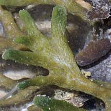 |
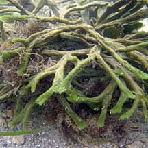 Terumbu Semakau, May 10 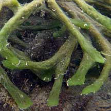 |
Links
|
|
|